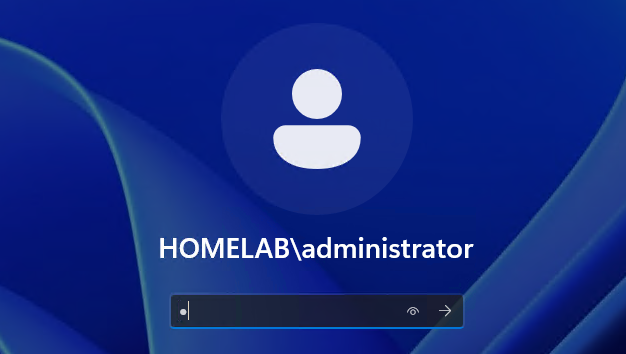
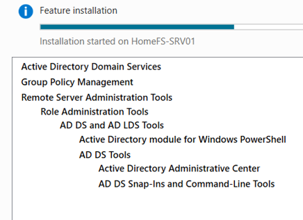
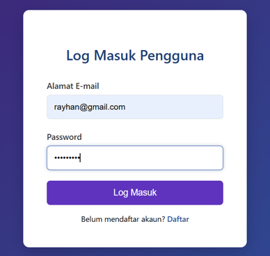

Senior Technical Support
Experienced in troubleshooting hardware, software, and network issues. Currently learning and improving in system administration and computer programming.
IT Technical Support with hands-on experience in diagnosing and resolving hardware and software issues, including laptop repair, system troubleshooting, and customer support. Skilled in Windows OS support, with practical exposure to Windows Server, Active Directory, and virtualization through home lab environments. Experienced in providing both remote and on-site technical support, with a solid understanding of networking fundamentals. Continuously improving technical skills by building and managing real-world IT scenarios, including domain setup, user management, and system configuration. Currently expanding into web development using PHP, HTML, and CSS, with hands-on experience in building simple applications and implementing basic CRUD operations.
Hardware & Software Troubleshooting, Windows OS Support, ticket management, and technical documentation
TCP/IP, DNS, DHCP, VPN, Remote Access (RDP, Tailscale, TeamViewer)
Windows Server, Active Directory, Group Policy, User & Access Management, File Sharing
Microsoft Hyper-V (Lab Setup & Testing), VMware vSphere (esxi)
MySQL, phpMyAdmin (Fundamentals), Database Design Basics, CRUD Operations, SQL Query Writing, Data Handling
PHP, HTML, CSS (Fundamentals), Basic Web Development, CRUD Operations, Form Handling, Database Integration
Designed and built custom gaming and productivity PCs. Component Installation, System Upgrading, Maintenance, Cable Management
Remote Troubleshooting, Ticket Handling, Customer Support
2019 – Present
2017 – 2019
2017

Built a virtual IT lab environment using Hyper-V to simulate real-world infrastructure including Windows Server deployment, network settings and configuration, and system testing scenarios.
Hyper-V
Windows Server
Tailscale
RDP

Configured Active Directory domain environment including user creation, OU structure, and Group Policy implementation to simulate enterprise-level user and access management.
Active Directory
Windows Server
Group Policy
RDP

Developed a simple and fully functional web-based complaint management system using PHP and MySQL with CRUD functionality, allowing users to submit, update, and track issues.
XAMPP Apache
MySQL Workbench
Visual Studio Code
PHP, HTML, CSS